Tables and grids
You often want to position graphics at regularly-spaced locations on the drawing. These positions can be provided by:
Tiler: a rectangular grid iterator which you specify by enclosing area, and the number of rows and columnsPartition: a rectangular grid iterator which you specify by enclosing area, and the width and height of each cellGrida rectangular grid iterator, where points are supplied on demandTable: a rectangular grid iterator which you specify by providing row and column numbers, row heights and column widths
These are types which act as iterators. Their job is to provide you with centerpoints; you'll probably want to use these in combination with the cell's widths and heights.
There are also functions to make hexagonal grids (Hexagonal grids grids and EquilateralTriangleGrid grids.
Tiles and partitions
The drawing area (or any other area) can be divided into rectangular tiles (as rows and columns) using the Tiler and Partition iterators.
The Tiler iterator returns the center point and tile number of each tile in turn.
In this example, every third tile is divided up into subtiles and colored:
tiles = Tiler(800, 500, 4, 5, margin=5)for (pos, n) in tiles randomhue() box(pos, tiles.tilewidth, tiles.tileheight, action=:fill) if n % 3 == 0 gsave() translate(pos) subtiles = Tiler(tiles.tilewidth, tiles.tileheight, 4, 4, margin=5) for (pos1, n1) in subtiles randomhue() box(pos1, subtiles.tilewidth, subtiles.tileheight, action=:fill) end grestore() end sethue("white") textcentered(string(n), pos + Point(0, 5))end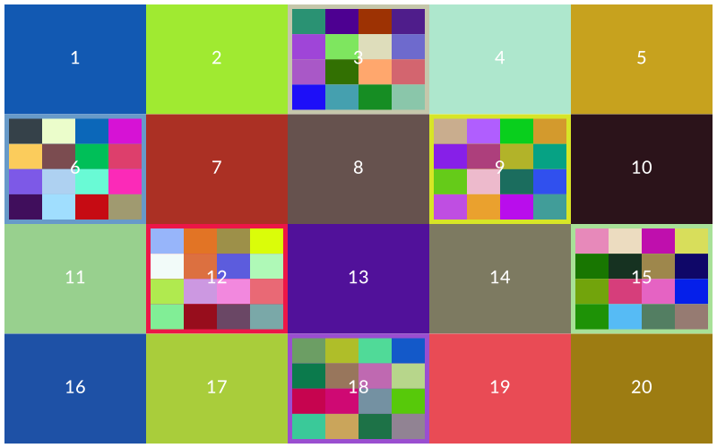
Partition is like Tiler, but you specify the width and height of the tiles, rather than how many rows and columns of tiles you want.
You can obtain the centerpoints of all the tiles in one go with:
first.(collect(tiles))or obtain ranges with:
tiles[1:2:end]Tables
The Table iterator can be used to define tables: rectangular grids with a specific number of rows and columns.
Unlike a Tiler, the Table iterator lets you have columns with different widths, and rows with different heights.
Luxor generally tries to keep to the Julia convention of ‘width’ then ‘height’, ‘row’ then ‘column’. This flavour of consistency can sometimes be confusing if you’re expecting other kinds of consistency, such as ‘x before y’ or ‘column major’.)
Tables don't store data, of course, but are designed to help you draw tabular data.
To create a simple table with 3 rows and 4 columns, using the default width and height (100):
julia> t = Table(3, 4);When you use this as an iterator, you can get the coordinates of the center of each cell, and its number:
julia> for i in t println("row: $(t.currentrow), column: $(t.currentcol), center: $(i[1])") endrow: 1, column: 1, center: Luxor.Point(-150.0, -100.0)row: 1, column: 2, center: Luxor.Point(-50.0, -100.0)row: 1, column: 3, center: Luxor.Point(50.0, -100.0)row: 1, column: 4, center: Luxor.Point(150.0, -100.0)row: 2, column: 1, center: Luxor.Point(-150.0, 0.0)row: 2, column: 2, center: Luxor.Point(-50.0, 0.0)row: 2, column: 3, center: Luxor.Point(50.0, 0.0)row: 2, column: 4, center: Luxor.Point(150.0, 0.0)row: 3, column: 1, center: Luxor.Point(-150.0, 100.0)row: 3, column: 2, center: Luxor.Point(-50.0, 100.0)row: 3, column: 3, center: Luxor.Point(50.0, 100.0)row: 3, column: 4, center: Luxor.Point(150.0, 100.0)You can also access row and column information:
julia> for r in 1:size(t)[1] for c in 1:size(t)[2] @show t[r, c] end endt[r, c] = Luxor.Point(-150.0, -100.0)t[r, c] = Luxor.Point(-50.0, -100.0)t[r, c] = Luxor.Point(50.0, -100.0)t[r, c] = Luxor.Point(150.0, -100.0)t[r, c] = Luxor.Point(-150.0, 0.0)t[r, c] = Luxor.Point(-50.0, 0.0)t[r, c] = Luxor.Point(50.0, 0.0)t[r, c] = Luxor.Point(150.0, 0.0)t[r, c] = Luxor.Point(-150.0, 100.0)t[r, c] = Luxor.Point(-50.0, 100.0)t[r, c] = Luxor.Point(50.0, 100.0)t[r, c] = Luxor.Point(150.0, 100.0)The next example creates a table with 10 rows and 10 columns, where each cell is 50 units wide and 35 high.
sethue("black")t = Table(10, 10, 50, 35) # 10 rows, 10 columns, 50 wide, 35 highhundred = 1:100for n in 1:length(t) text(string(hundred[n]), t[n], halign=:center, valign=:middle)endsetopacity(0.5)sethue("thistle")# row 3, every columnmarkcells(t, getcells(t, 3, :), func = (args...) -> ( circle(args[1], args[2]/2, :fill) ), action=:stroke)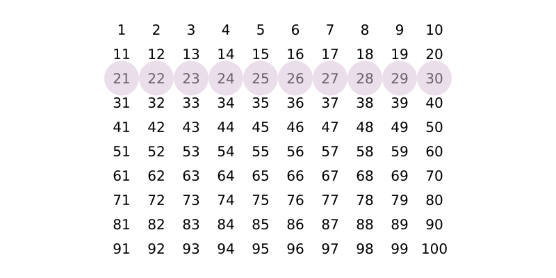
You can access rows or columns in the usual Julian way. See Selecting and highlighting cells for details about how to select and mark cells.
Notice that the table is drawn row by row, whereas 2D Julia arrays are usually accessed column by column.
Varying row heights and column widths
To specify varying row heights and column widths, supply arrays or ranges to the Table constructor. The next example has logarithmically increasing row heights, and four columns of width 130 points:
t = Table(10 .^ range(0.7, length=25, stop=1.5), fill(130, 4))for (pt, n) in t setgray(rescale(n, 1, length(t), 0, 1)) box(pt, t.colwidths[t.currentcol], t.rowheights[t.currentrow], :fill) sethue("white") fontsize(t.rowheights[t.currentrow]) text(string(n), pt, halign=:center, valign=:middle)end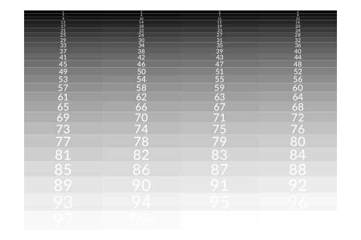
To fill table cells, it's useful to be able to access the table's row and column specifications (using the colwidths and rowheights fields), and iteration can also provide information about the current row and column being processed (currentrow and currentcol).
To ensure that graphic elements don't stray outside the cell walls, you can use a clipping region.
Drawing arrays and dataframes
With a little bit of extra work you can write code that draws objects like arrays and dataframes combining text with graphic features. For example, this code draws arrays visually and numerically.
function drawbar(t::Table, data, row, column, minvalue, maxvalue, barheight) setline(1.5) cellwidth = t.colwidths[column] - 10 leftmargin = t[row, column] - (cellwidth/2, 0) sethue("gray70") box(leftmargin - (0, barheight/2), leftmargin + (cellwidth, barheight/2), :fill) boxwidth = rescale(data[row, column], minvalue, maxvalue, 0, cellwidth) sethue("red") box(leftmargin - (0, barheight/2), leftmargin + (boxwidth, barheight/2), :fill) sethue("black") line(leftmargin + (boxwidth, -barheight/2), leftmargin + (boxwidth, +barheight/2), :stroke) text(string(round(data[row, column], digits=3)), t[row, column] - (cellwidth/2, 10), halign=:left)endA = rand(6, 6)l, h = extrema(A)rt, ct = size(A)t = Table(size(A), (80, 30))fontface("Georgia")fontsize(12)for r in 1:rt for c in 1:ct drawbar(t, A, r, c, l, h, 10) endend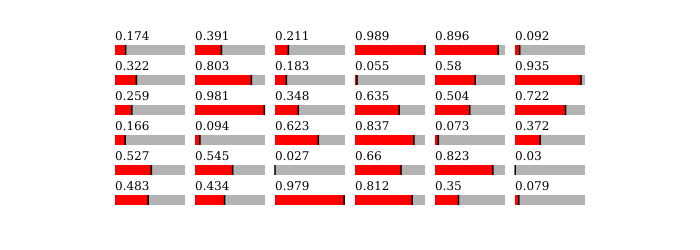
Selecting and highlighting cells
With getcells() and markcells() you can select and apply graphics to cells of Tables and Tilers.
getcells() has two ways to select cells: either by their single index value, or by specifying rows and columns. Remember, unlike with typical Julia arrays, in a 2 row by 4 column table, the cell at row 1, column 4 will have the index number 4, not 7:
┌───┬───┬───┬───┐
│ 1 │ 2 │ 3 │ 4 │
├───┼───┼───┼───┤
│ 5 │ 6 │ 7 │ 8 │
└───┴───┴───┴───┘The function returns an array of cells in Tuples, each Tuple holding the coordinate of the cell center and its index number.
The markcells() function takes a Table or Tiler, and the selected cells made by getcells(), and, by default, draws a box around each one. You can instead choose the :fill action, or supply a four-argument function that adds graphics relevant to the cell's position, width, height, and number.
@drawsvg begin background("grey10") fontsize(10) t = Tiler(600, 300, 6, 6) sethue("cyan") # mark even cells markcells(t, getcells(t, 2:2:36)) sethue("orange") setopacity(0.5) # fill odd cells orange markcells(t, getcells(t, 1:2:35), action=:fill) sethue("blue") setopacity(0.5) # fill cells in rows 2:5, columns 3:4 blue markcells(t, getcells(t, 2:5, 3:4), action=:fill) setopacity(1) # draw circles and index numbers for primes primes = filter(n -> all(i -> n % i != 0, 2:floor(Int, sqrt(n))), 2:36) markcells(t, getcells(t, primes), func=(pt, w, h, n) -> begin sethue("purple") circle(pt, h / 2, :fill) sethue("white") text(string(n), pt, halign=:center, valign=:middle) end)end 600 300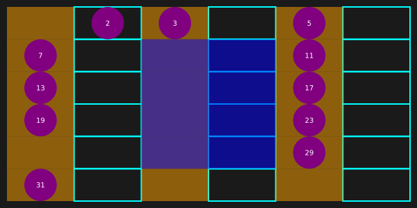
Grids
You might also find a use for a grid. Luxor provides a simple grid utility. Grids are lazy: they'll supply the next point on the grid when you ask for it.
Define a rectangular grid with GridRect. Get the next grid point from a grid with nextgridpoint(grid).
grid = GridRect(O, 40, 80, (10 - 1) * 40)for i in 1:20 randomhue() p = nextgridpoint(grid) squircle(p, 20, 20, :fill) sethue("white") text(string(i), p, halign=:center)end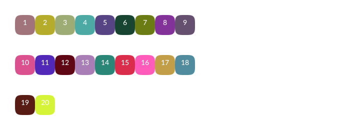
Hexagonal grids
Use the hexagon constructors HexagonOffsetOddR, HexagonOffsetEvenR, HexagonAxial, and HexagonCubic to define a hexagonal tile on a grid, using hexagon index values to specify their location.
You can use hexcenter() to find the Cartesian coordinates of the center of a hexagonal tile on the grid, and hextile() to return the Cartesian coordinates of the vertices of the tile.
For example, this code draws a hexagon with the hexagonal indices 0 0 on a grid centred at the origin with grid spacing of 100 units:
sethue("purple")poly(hextile(HexagonOffsetOddR(0, 0, 100)), :fill)" fill-opacity="1" d="M 386.601562 200 L 300 250 L 213.398438 200 L 213.398438 100 L 300 50 L 386.601562 100 "/>
</svg>)
By default the hexagonal grid indices 0 0 are located at the drawing's origin (Point(0, 0)). You can change this, and also specify the width and height of the hexagonal grid.
By using different index values you can draw hexagons at other locations on the hexagonal grid.
sethue("purple")poly(hextile(HexagonOffsetOddR(-1, -1, 40)), :fill)sethue("orange")poly(hextile(HexagonOffsetOddR(-1, 1, 40)), :fill)sethue("green")poly(hextile(HexagonOffsetOddR(1, 1, 40)), :fill)sethue("blue")poly(hextile(HexagonOffsetOddR(1, -1, 40)), :fill)" fill-opacity="1" d="M 300 110 L 265.359375 130 L 230.71875 110 L 230.71875 70 L 265.359375 50 L 300 70 "/>
<path fill-rule="nonzero" fill="rgb(100%25, 64.705882%25, 0%25)" fill-opacity="1" d="M 300 230 L 265.359375 250 L 230.71875 230 L 230.71875 190 L 265.359375 170 L 300 190 "/>
<path fill-rule="nonzero" fill="rgb(0%25, 50.196078%25, 0%25)" fill-opacity="1" d="M 438.5625 230 L 403.921875 250 L 369.28125 230 L 369.28125 190 L 403.921875 170 L 438.5625 190 "/>
<path fill-rule="nonzero" fill="rgb(0%25, 0%25, 100%25)" fill-opacity="1" d="M 438.5625 110 L 403.921875 130 L 369.28125 110 L 369.28125 70 L 403.921875 50 L 438.5625 70 "/>
</svg>)
Hexagonal grid indexing
Whereas rectangular grids can be indexed using x ("column") and y ("row") integers, hexagonal grids can be indexed in various ways. For example, odd-numbered "rows" can be shifted to the right:
fontsize(16)for q in -2:2 # vertical for r in -2:2 # horizontal pgon = hextile(HexagonOffsetOddR(q, r, 40)) sethue(HSB(rand(1:360), 0.6, 0.7)) poly(pgon, :fill) sethue("white") text("$q", hexcenter(HexagonOffsetOddR(q, r, 40)), halign=:left, valign=:top) text("$r", hexcenter(HexagonOffsetOddR(q, r, 40)), halign=:right, valign=:bottom) endend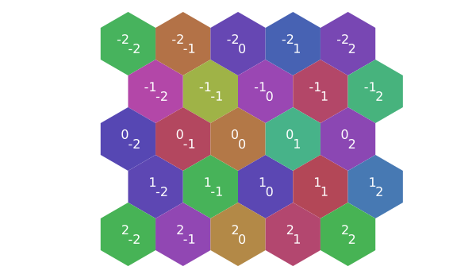
Alternatively, even-numbered "rows" can be shifted to the right:
fontsize(16)for q in -2:2 # vertical for r in -2:2 # horizontal pgon = hextile(HexagonOffsetEvenR(q, r, 40)) sethue(HSB(rand(1:360), 0.6, 0.7)) poly(pgon, :fill) sethue("white") text("$q", hexcenter(HexagonOffsetEvenR(q, r, 40)), halign=:left, valign=:top) text("$r", hexcenter(HexagonOffsetEvenR(q, r, 40)), halign=:right, valign=:bottom) endend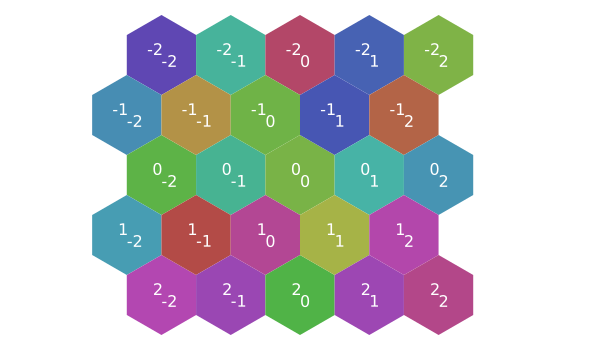
The cubic hexagon constructor accepts three coordinates:
for q in -2:2 for r in -2:2 pgon = hextile(HexagonCubic(q, r, -q - r, 25)) sethue(HSB(rand(1:360), 0.6, 0.7)) poly(pgon, :fill) endend" fill-opacity="1" d="M 321.652344 337.5 L 300 350 L 278.347656 337.5 L 278.347656 312.5 L 300 300 L 321.652344 312.5 "/>
<path fill-rule="nonzero" fill="rgb(67.2%25, 28%25, 70%25)" fill-opacity="1" d="M 300 300 L 278.347656 312.5 L 256.699219 300 L 256.699219 275 L 278.347656 262.5 L 300 275 "/>
<path fill-rule="nonzero" fill="rgb(70%25, 28%25, 56.7%25)" fill-opacity="1" d="M 278.347656 262.5 L 256.699219 275 L 235.046875 262.5 L 235.046875 237.5 L 256.699219 225 L 278.347656 237.5 "/>
<path fill-rule="nonzero" fill="rgb(28%25, 33.6%25, 70%25)" fill-opacity="1" d="M 256.699219 225 L 235.046875 237.5 L 213.398438 225 L 213.398438 200 L 235.046875 187.5 L 256.699219 200 "/>
<path fill-rule="nonzero" fill="rgb(39.2%25, 70%25, 28%25)" fill-opacity="1" d="M 235.046875 187.5 L 213.398438 200 L 191.746094 187.5 L 191.746094 162.5 L 213.398438 150 L 235.046875 162.5 "/>
<path fill-rule="nonzero" fill="rgb(28%25, 70%25, 34.3%25)" fill-opacity="1" d="M 343.300781 300 L 321.652344 312.5 L 300 300 L 300 275 L 321.652344 262.5 L 343.300781 275 "/>
<path fill-rule="nonzero" fill="rgb(28%25, 46.2%25, 70%25)" fill-opacity="1" d="M 321.652344 262.5 L 300 275 L 278.347656 262.5 L 278.347656 237.5 L 300 225 L 321.652344 237.5 "/>
<path fill-rule="nonzero" fill="rgb(28%25, 70%25, 29.4%25)" fill-opacity="1" d="M 300 225 L 278.347656 237.5 L 256.699219 225 L 256.699219 200 L 278.347656 187.5 L 300 200 "/>
<path fill-rule="nonzero" fill="rgb(46.2%25, 70%25, 28%25)" fill-opacity="1" d="M 278.347656 187.5 L 256.699219 200 L 235.046875 187.5 L 235.046875 162.5 L 256.699219 150 L 278.347656 162.5 "/>
<path fill-rule="nonzero" fill="rgb(31.5%25, 70%25, 28%25)" fill-opacity="1" d="M 256.699219 150 L 235.046875 162.5 L 213.398438 150 L 213.398438 125 L 235.046875 112.5 L 256.699219 125 "/>
<path fill-rule="nonzero" fill="rgb(28%25, 70%25, 35%25)" fill-opacity="1" d="M 364.953125 262.5 L 343.300781 275 L 321.652344 262.5 L 321.652344 237.5 L 343.300781 225 L 364.953125 237.5 "/>
<path fill-rule="nonzero" fill="rgb(28%25, 54.6%25, 70%25)" fill-opacity="1" d="M 343.300781 225 L 321.652344 237.5 L 300 225 L 300 200 L 321.652344 187.5 L 343.300781 200 "/>
<path fill-rule="nonzero" fill="rgb(34.3%25, 70%25, 28%25)" fill-opacity="1" d="M 321.652344 187.5 L 300 200 L 278.347656 187.5 L 278.347656 162.5 L 300 150 L 321.652344 162.5 "/>
<path fill-rule="nonzero" fill="rgb(70%25, 28%25, 49%25)" fill-opacity="1" d="M 300 150 L 278.347656 162.5 L 256.699219 150 L 256.699219 125 L 278.347656 112.5 L 300 125 "/>
<path fill-rule="nonzero" fill="rgb(50.4%25, 70%25, 28%25)" fill-opacity="1" d="M 278.347656 112.5 L 256.699219 125 L 235.046875 112.5 L 235.046875 87.5 L 256.699219 75 L 278.347656 87.5 "/>
<path fill-rule="nonzero" fill="rgb(31.5%25, 28%25, 70%25)" fill-opacity="1" d="M 386.601562 225 L 364.953125 237.5 L 343.300781 225 L 343.300781 200 L 364.953125 187.5 L 386.601562 200 "/>
<path fill-rule="nonzero" fill="rgb(28%25, 70%25, 32.9%25)" fill-opacity="1" d="M 364.953125 187.5 L 343.300781 200 L 321.652344 187.5 L 321.652344 162.5 L 343.300781 150 L 364.953125 162.5 "/>
<path fill-rule="nonzero" fill="rgb(70%25, 28%25, 42%25)" fill-opacity="1" d="M 343.300781 150 L 321.652344 162.5 L 300 150 L 300 125 L 321.652344 112.5 L 343.300781 125 "/>
<path fill-rule="nonzero" fill="rgb(38.5%25, 28%25, 70%25)" fill-opacity="1" d="M 321.652344 112.5 L 300 125 L 278.347656 112.5 L 278.347656 87.5 L 300 75 L 321.652344 87.5 "/>
<path fill-rule="nonzero" fill="rgb(28%25, 70%25, 51.8%25)" fill-opacity="1" d="M 300 75 L 278.347656 87.5 L 256.699219 75 L 256.699219 50 L 278.347656 37.5 L 300 50 "/>
<path fill-rule="nonzero" fill="rgb(28%25, 57.4%25, 70%25)" fill-opacity="1" d="M 408.253906 187.5 L 386.601562 200 L 364.953125 187.5 L 364.953125 162.5 L 386.601562 150 L 408.253906 162.5 "/>
<path fill-rule="nonzero" fill="rgb(70%25, 60.2%25, 28%25)" fill-opacity="1" d="M 386.601562 150 L 364.953125 162.5 L 343.300781 150 L 343.300781 125 L 364.953125 112.5 L 386.601562 125 "/>
<path fill-rule="nonzero" fill="rgb(70%25, 28%25, 69.3%25)" fill-opacity="1" d="M 364.953125 112.5 L 343.300781 125 L 321.652344 112.5 L 321.652344 87.5 L 343.300781 75 L 364.953125 87.5 "/>
<path fill-rule="nonzero" fill="rgb(70%25, 65.8%25, 28%25)" fill-opacity="1" d="M 343.300781 75 L 321.652344 87.5 L 300 75 L 300 50 L 321.652344 37.5 L 343.300781 50 "/>
<path fill-rule="nonzero" fill="rgb(70%25, 28%25, 37.1%25)" fill-opacity="1" d="M 321.652344 37.5 L 300 50 L 278.347656 37.5 L 278.347656 12.5 L 300 0 L 321.652344 12.5 "/>
</svg>)
The axial constructor accepts two:
for q in -2:2 for r in -2:2 pgon = hextile(HexagonAxial(q, r, 25)) sethue(HSB(rand(1:360), 0.6, 0.7)) poly(pgon, :fill) endend" fill-opacity="1" d="M 191.746094 112.5 L 170.097656 125 L 148.445312 112.5 L 148.445312 87.5 L 170.097656 75 L 191.746094 87.5 "/>
<path fill-rule="nonzero" fill="rgb(28%25, 37.1%25, 70%25)" fill-opacity="1" d="M 213.398438 150 L 191.746094 162.5 L 170.097656 150 L 170.097656 125 L 191.746094 112.5 L 213.398438 125 "/>
<path fill-rule="nonzero" fill="rgb(28%25, 70%25, 44.8%25)" fill-opacity="1" d="M 235.046875 187.5 L 213.398438 200 L 191.746094 187.5 L 191.746094 162.5 L 213.398438 150 L 235.046875 162.5 "/>
<path fill-rule="nonzero" fill="rgb(48.3%25, 28%25, 70%25)" fill-opacity="1" d="M 256.699219 225 L 235.046875 237.5 L 213.398438 225 L 213.398438 200 L 235.046875 187.5 L 256.699219 200 "/>
<path fill-rule="nonzero" fill="rgb(28%25, 70%25, 40.6%25)" fill-opacity="1" d="M 278.347656 262.5 L 256.699219 275 L 235.046875 262.5 L 235.046875 237.5 L 256.699219 225 L 278.347656 237.5 "/>
<path fill-rule="nonzero" fill="rgb(50.4%25, 70%25, 28%25)" fill-opacity="1" d="M 235.046875 112.5 L 213.398438 125 L 191.746094 112.5 L 191.746094 87.5 L 213.398438 75 L 235.046875 87.5 "/>
<path fill-rule="nonzero" fill="rgb(30.1%25, 28%25, 70%25)" fill-opacity="1" d="M 256.699219 150 L 235.046875 162.5 L 213.398438 150 L 213.398438 125 L 235.046875 112.5 L 256.699219 125 "/>
<path fill-rule="nonzero" fill="rgb(67.2%25, 28%25, 70%25)" fill-opacity="1" d="M 278.347656 187.5 L 256.699219 200 L 235.046875 187.5 L 235.046875 162.5 L 256.699219 150 L 278.347656 162.5 "/>
<path fill-rule="nonzero" fill="rgb(70%25, 45.5%25, 28%25)" fill-opacity="1" d="M 300 225 L 278.347656 237.5 L 256.699219 225 L 256.699219 200 L 278.347656 187.5 L 300 200 "/>
<path fill-rule="nonzero" fill="rgb(28%25, 69.3%25, 70%25)" fill-opacity="1" d="M 321.652344 262.5 L 300 275 L 278.347656 262.5 L 278.347656 237.5 L 300 225 L 321.652344 237.5 "/>
<path fill-rule="nonzero" fill="rgb(28%25, 66.5%25, 70%25)" fill-opacity="1" d="M 278.347656 112.5 L 256.699219 125 L 235.046875 112.5 L 235.046875 87.5 L 256.699219 75 L 278.347656 87.5 "/>
<path fill-rule="nonzero" fill="rgb(28%25, 70%25, 31.5%25)" fill-opacity="1" d="M 300 150 L 278.347656 162.5 L 256.699219 150 L 256.699219 125 L 278.347656 112.5 L 300 125 "/>
<path fill-rule="nonzero" fill="rgb(70%25, 28%25, 28%25)" fill-opacity="1" d="M 321.652344 187.5 L 300 200 L 278.347656 187.5 L 278.347656 162.5 L 300 150 L 321.652344 162.5 "/>
<path fill-rule="nonzero" fill="rgb(58.1%25, 70%25, 28%25)" fill-opacity="1" d="M 343.300781 225 L 321.652344 237.5 L 300 225 L 300 200 L 321.652344 187.5 L 343.300781 200 "/>
<path fill-rule="nonzero" fill="rgb(67.9%25, 70%25, 28%25)" fill-opacity="1" d="M 364.953125 262.5 L 343.300781 275 L 321.652344 262.5 L 321.652344 237.5 L 343.300781 225 L 364.953125 237.5 "/>
<path fill-rule="nonzero" fill="rgb(28%25, 58.1%25, 70%25)" fill-opacity="1" d="M 321.652344 112.5 L 300 125 L 278.347656 112.5 L 278.347656 87.5 L 300 75 L 321.652344 87.5 "/>
<path fill-rule="nonzero" fill="rgb(63.7%25, 70%25, 28%25)" fill-opacity="1" d="M 343.300781 150 L 321.652344 162.5 L 300 150 L 300 125 L 321.652344 112.5 L 343.300781 125 "/>
<path fill-rule="nonzero" fill="rgb(67.9%25, 70%25, 28%25)" fill-opacity="1" d="M 364.953125 187.5 L 343.300781 200 L 321.652344 187.5 L 321.652344 162.5 L 343.300781 150 L 364.953125 162.5 "/>
<path fill-rule="nonzero" fill="rgb(70%25, 28%25, 41.3%25)" fill-opacity="1" d="M 386.601562 225 L 364.953125 237.5 L 343.300781 225 L 343.300781 200 L 364.953125 187.5 L 386.601562 200 "/>
<path fill-rule="nonzero" fill="rgb(70%25, 32.9%25, 28%25)" fill-opacity="1" d="M 408.253906 262.5 L 386.601562 275 L 364.953125 262.5 L 364.953125 237.5 L 386.601562 225 L 408.253906 237.5 "/>
<path fill-rule="nonzero" fill="rgb(28%25, 70%25, 61.6%25)" fill-opacity="1" d="M 364.953125 112.5 L 343.300781 125 L 321.652344 112.5 L 321.652344 87.5 L 343.300781 75 L 364.953125 87.5 "/>
<path fill-rule="nonzero" fill="rgb(70%25, 39.9%25, 28%25)" fill-opacity="1" d="M 386.601562 150 L 364.953125 162.5 L 343.300781 150 L 343.300781 125 L 364.953125 112.5 L 386.601562 125 "/>
<path fill-rule="nonzero" fill="rgb(56.7%25, 28%25, 70%25)" fill-opacity="1" d="M 408.253906 187.5 L 386.601562 200 L 364.953125 187.5 L 364.953125 162.5 L 386.601562 150 L 408.253906 162.5 "/>
<path fill-rule="nonzero" fill="rgb(28%25, 70%25, 65.8%25)" fill-opacity="1" d="M 429.902344 225 L 408.253906 237.5 L 386.601562 225 L 386.601562 200 L 408.253906 187.5 L 429.902344 200 "/>
<path fill-rule="nonzero" fill="rgb(70%25, 40.6%25, 28%25)" fill-opacity="1" d="M 451.554688 262.5 L 429.902344 275 L 408.253906 262.5 L 408.253906 237.5 L 429.902344 225 L 451.554688 237.5 "/>
</svg>)
Hexagonal rings
The hexring() function finds the nth ring of adjacent hexagons surrounding a hexagon.
The first ring consists of six hexagons. Ring n consists of 6n hexagons.
hexa = HexagonOffsetOddR(0, 0, 10)for i in 1:15 ring = hexring(i, hexa) sethue(HSB(rescale(i, 1, 15, 0, 360), 0.8, 0.8)) for (n, h) in enumerate(ring) poly(hextile(h), :fillpreserve) endend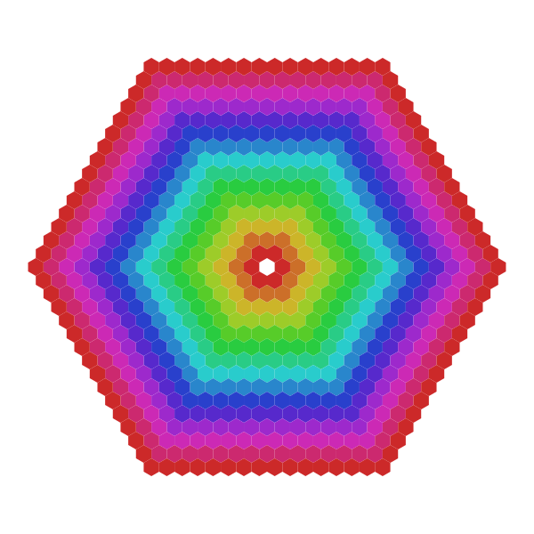
Neighbouring hexagons
To find the six hexagons that surround a hexagon, use hexneighbors().
for i in 1:10 sethue(HSB(rand(0:360), 0.8, 0.8)) hex1 = HexagonOffsetOddR(rand(-7:7), rand(-7:7), 15) for neighbor in hexneighbors(hex1) poly(hextile(neighbor), :fill) circle(hexcenter(neighbor), 25, :stroke) endend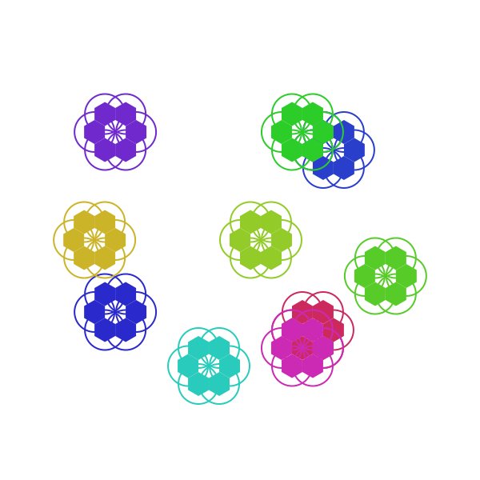
Spiralling hexagons
The hexspiral() function generates a spiral of hexagons around a central hexagon to form n rings of hexagons.
using Luxor, Colorsbackground("black")hexagon = HexagonOffsetEvenR(0, 0, 16)setline(0.75)for (n, h) in enumerate(hexspiral(hexagon, 10)) sethue(HSB(mod1(5n, 360), 0.8, 0.8)) poly(hextile(h), :fillpreserve) sethue("black") text(string(n), hexcenter(h), halign=:center) strokepath()end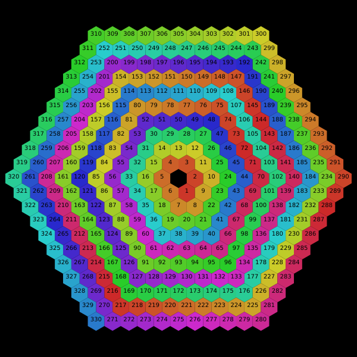
EquilateralTriangleGrid
To create a grid of equilateral triangles, you can use EquilateralTriangleGrid. Provide the starting point, the side length, and the number of rows and columns. The iterator provides a tuple of the vertices and number for each triangle.
using Luxor, Colors background("black") nrows = 12 ncols = 20 side = 45 startpoint = boxtopleft() + (50, 50) eqtg = EquilateralTriangleGrid(startpoint, side, nrows, ncols) for e in eqtg vertices, trianglenumber = e sethue(HSB(rescale(trianglenumber, 0, nrows * ncols, 0, 360), 0.7, 0.8)) poly(vertices, :fillpreserve, close=true) sethue("black") strokepath() text(string(trianglenumber), halign=:center, polycentroid(vertices)) end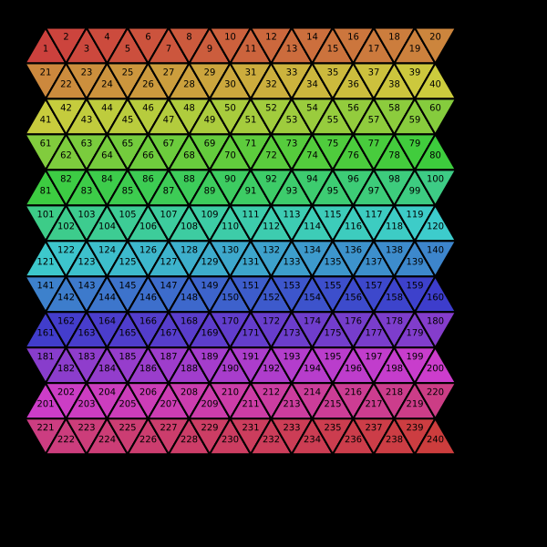